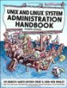
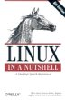
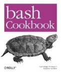
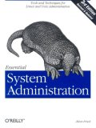
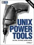

Alphabetical Directory of Linux Commands - O`Reilly
LinuxCommand.org - SuperMan pages
Linux Man pages - Searchable
GNU Bash Manual - gzip archives
TCP and UDP port numbers - wikipedia
Bash Guide for beginners - Machtelt Garrels
commandlinefu - command-line gems
Documentation and Examples - bash cook book
Debian documentation
Explain Shell - Enter an Ubuntu (bash) command-line to see the help text that matches each argument
Greg Wooledge Bash Guide and FAQ
The Linix Documentation Project
The Linux Cookbook - Tips and Techniques
JustLinux - forum
bash tips - Configure the bash terminal
Bash pitfalls - GreyCat's wiki
bash completion - Ian Macdonald
Google Shell Style guide - some short, sensible advice on coding style.
IBM DeveloperWorks - Linux Technical library
Linux Shell Scripting Tutorial - LSST
Unix/Linux/BSD Toolbox - concise summary of commands
Administration shell scripts - Dawid Michalczyk
dotfiles.org - Share startup files
grymoire.com - Advanced stuff
Speaking UNIX - Tutorials from IBM
Shell-fu - Daily tips
Introduction to text manipulation on UNIX-based systems
LinuxCommand - Shell Scripting tutorial
LWN - Linux Weekly News
UbuntuForums - HowTo guides and forum
Introduction to the Ubuntu terminal
UbuntuGuide - In depth guide to Ubuntu
UNIX FAQ
 UNIX and Linux System Administration Handbook 4th Edition, July 2010 by Evi Nemeth, Garth Snyder, Trent R. Hein, Ben Whaley
The twentieth anniversary edition of the world’s best-selling UNIX system administration book has been made even better by adding coverage of the leading Linux distributions: Ubuntu, openSUSE, and RHEL. Linux in a Nutshell 6th Edition, Sept 2009
A command reference for Linux, find the command syntax you need. Also UNIX in a Nutshell, Fourth edition (2008) by Arnold Robbins
the standard desktop reference. (it even inspired a spoof cover) bash Cookbook: Solutions and Examples for bash Users O'Reilly May 2007
A substantial trove of tips and useful scripts, covers bash 3.2 Essential System Administration, Third Edition Aug 2002 by Æleen Frisch
Describes Unix tools in the context of a system administrator's job. More than just covering syntax, tools and concepts, this book shows how to use administrative tools intelligently and efficiently.Ubuntu Kung Fu: Tips, Tricks, Hints, and Hacks by Kier Thomas
Entertaining and readable with hundreds of concise tips. Enhance productivity, tweak Ubuntu performance, enhance security, and lots more. UNIX Power Tools by Jerry D Peak, Tim O'Reilly et al
Useful tricks and techniques, each chapter describes the different ways of performing a task. e.g. the page on 'Wildcards' has 10 ways to select a group of files - only two of which involve the grep command. [Archive of shell scripts]
1200 pagesUnix Shell Programming, Third Edition (Paperback)
by Stephen Kochan, Patrick Wood
Detailed coverage of shell programming: regular expressions, the kernel and utilities.
Bash downloads - Latest versions and patches.
Distrowatch - Compare major distributions
wubi - Ubuntu installer for WindowsElementary.io - OSX clone
Gentoo
RedHat Linux
Linux.Dell.com (Red Hat)
Linux Mint - Multimedia out of the box - based on Debian/Ubuntu - xfce is a lightweight desktop, good for older hardware.
Novell linux
Open Suse Tumbleweed (rolling distribution) or Leap (stable release model)
Live CDs & Wikipedia Live CDs
Ubuntu
Ack - better than grep - a grep-like tool, aimed at programmers.
alias.sh - Manage all of your aliases online
AntiWord - Cross-platform MS Word reader.
Asunder - Audio CD ripper and encoder for Linux
Audacity - CD Ripper, Sound editor
AutoFsck - Configure boot disc checks (Ubuntu)
Beagle - Desktop Search
CSV kit - Utilities for working with CSV files
Dar - Disk Archive/backup
Evolution - email with Exchange compatibility
Easy Tag - Tag editor for MP3, Ogg Vorbis files
Fanout - Run a command on multiple machines
Firewalls: KMyFirewall Easy Firewall | Firewall Builder | Shoreline Firewall | GuardDog | Firestarter
GNU Parted | Partimage - partition managers
Gnome Do - App launcher (inspired by Quicksilver) includes Docky
Google command line - Script Youtube, Cal, docs, picasa etc
Gftp multithreaded ftp
HTML Tidy - Check and fix HTML and XML files.
htop - an interactive process viewer
ImgSeek - Photo collection manager and viewer
Inkscape - Vector Graphics (Illustrator)
k3b.org - The CD/DVD Kreator
KNode newsreader - for K desktop
KVM - Virtualization software (Kernel-based Virtual Machine)
K3b - The CD/DVD Kreator for Linux - optimized for KDE
Macromedia Flash Player
Micro - Terminal-based text editor that aims to be easy to use and intuitive.
MPlayer - DVD and media player
Network Monitoring Tools - SLAC
NetWatch - Ethernet monitoring
Pan - Newsreader
Partition Image - Ghost
PhotoRec - Data recovery software - hard disk, CD-ROM & Memory Cards
pc-tools.net - Utilities (Linux/BSD)
PDFtk - Command-line tool for processing PDFs
PostgreSQL - Database
Performance monitoring tools: atop, bmon, dstat, htop, ifstat, iftop, sysstat
rDesktop - RDP client for Windows (Terminal Services)
Sectools.org - Top 100 Network Security Tools
SoX - Sound processing command line utility (Sourceforge link removed)
TeamViewer - Screen sharing/Remote control (Mac/PC/Linux)
Terminator - Gnome Terminal management
thttpd - HTTP Web Server
VLC Media Player
VNC
Wink - Capture screenshots/video, add help text
Xfce - Lightweight window manager
xmms - Winamp clone
GNU FTP Sites - GNU programs and Manuals
comp.unix.shell - Shell scripting
comp.os.linux - General linux
Linux Questions.org
SS64 Discussion Forum
“Talk is cheap. Show me the code” - Linus Torvalds
{kind=link}